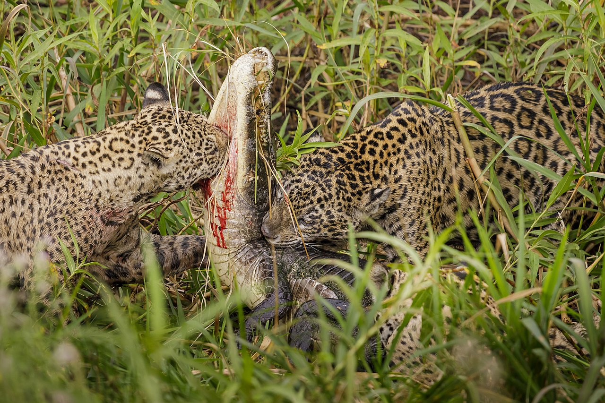

Jaguar
Menu Pagina
- Nombres comunes y etimología
- Biología y comportamiento
- Distribución y hábitat
- El jaguar es el único felino grande de América y el tercero más grande del mundo, después de los tigres y los leones. Son muy parecidos a los leopardos, que viven en África y Asia, pero las manchas de los jaguares son más complejas y suelen tener un punto en el centro.
Antiguamente, en muchas culturas sudamericanas, estos imponentes felinos eran adorados como dioses, y existen representaciones del jaguar en el arte y la arqueología de las culturas precolombinas.

- Amenazas para la supervivencia
Los jaguares enfrentan una serie de amenazas, entre estas, la fragmentación del hábitat y la matanza ilegal. Las altas tasas de deforestación de América del Sur y América Central —para tierras de pastoreo, agricultura y otros usos— no solo han destruido el hábitat de los jaguares, sino que también lo han fragmentado. Esto significa que los felinos quedan circunscritos a determinadas zonas y no pueden recorren grandes distancias para encontrar pareja. Ese tipo de aislamiento puede conducir a la endogamia y extinciones locales.
Otra amenaza que enfrentan los jaguares son los ganaderos, quienes los matan en forma de represalia. Como las tierras de pastoreo van reemplazando a los bosques, los jaguares acaban cazando el ganado. Como consecuencia, los dueños del ganado se deshacen de los jaguares, y en ocasiones, sin que estos hayan llegado a tocar su ganado.
